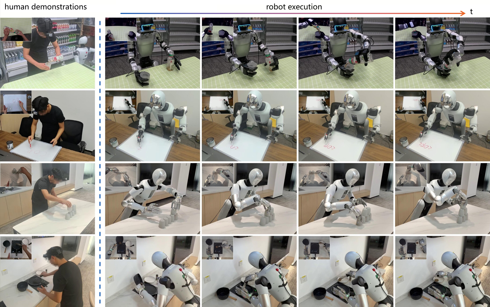
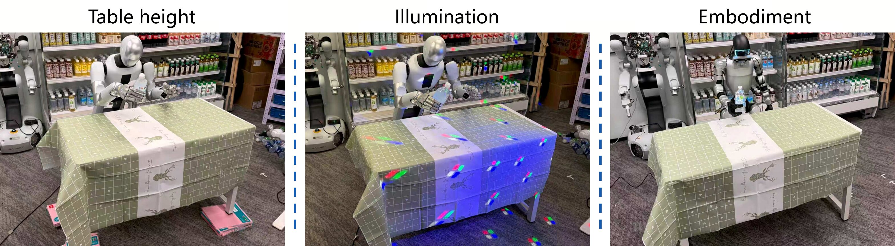

WAM-TTT: Steering World-Action Models by Watching Human Play at Test Time
Steering WAMs with Human Videos
Fast-Weight Memory for World-Action Models
TTT residual branches are inserted into the WAM's video expert. During deployment, only the fast weights are updated. The video and action experts, slow projections, and pretrained action prior stay fixed, preventing the human-side update from overwriting the policy.
Human-Robot Meta-Training

Meta-training uses 2,286 paired human and robot episodes over nine manipulation tasks. A key-value memory reconstruction objective aligns human visual cues with robot queries, while normalized phase alignment synchronizes the two views without pose or action labels on the human side.
Test-Time Human-Video Adaptation
At test time, a small batch of action-free human videos updates only the video-side fast weights using video prediction and key-value memory reconstruction. The adapted weights are then fixed throughout the robot rollout and can be reused without extending the model's context window.
Ablation Analysis
Protocol Components
| Method | Table Bussing | Swap Place |
|---|---|---|
| WAM-TTT | 100.0 | 88.9 |
| WAM-LoRA | 30.0 | 0.0 |
| w/o Meta Training | 9.0 | 0.0 |
| w/o Memory Recon. | 66.7 | 72.0 |
| w/o TTT | 40.0 | 74.1 |
Progress (%) under the unseen-scene setting, with 10 trials per cell. Fast-weight TTT, meta-training, and structured memory reconstruction each contribute to deployment-time steering.
Robot-Human Data Ratio
| Robot / Human | 3-task Avg. |
|---|---|
| 100 / 0 | 59.5 |
| 10 / 190 | 51.4 |
| 100 / 100 | 74.1 |
| 200 / 0 | 73.7 |
| 100 / 200 | 73.3 |
With the same 200-episode budget, 100 robot plus 100 human episodes reaches 74.1%, comparable to 200 robot episodes at 73.7%, while halving robot teleoperation demand.
Real-World Results


| Method | Transfer Bottle | Table Bussing | Deliver Drink | Swap Place | Pour Water | Stamp Paper | Flip Steak | Pyramid Stacking | Multi-step Steak | Avg. |
|---|---|---|---|---|---|---|---|---|---|---|
| π0.5 | 33.4 | 36.0 | 15.0 | 7.4 | 10.0 | 24.4 | 2.0 | 4.7 | 0.3 | 14.8 |
| Frozen WAM | 56.0 | 70.0 | 55.0 | 44.4 | 20.0 | 33.3 | 10.0 | 0.6 | 3.0 | 32.5 |
| EgoScale | 34.4 | 44.0 | 33.3 | 6.0 | 7.5 | 1.1 | 5.0 | 2.0 | 2.0 | 15.0 |
| WAM-Cotrain | 10.0 | 10.0 | 44.3 | 48.1 | 24.0 | 21.7 | 34.2 | 12.0 | 23.8 | 25.3 |
| WAM-ICL | 10.0 | 10.0 | 14.2 | 10.0 | 0.0 | 5.0 | 10.0 | 2.0 | 2.5 | 7.1 |
| WAM-TTT | 55.6 | 100.0 | 66.7 | 66.7 | 30.0 | 8.3 | 34.3 | 10.4 | 43.8 | 46.2 |
Progress (%) in previously unseen household environments. Each task result is averaged over 25 trials.
Real-World Demonstrations
Humanoid Manipulation
Bimanual Gripper Manipulation
Bimanual Dexterous Manipulation
Experimental Platforms
Evaluation spans three real-robot embodiments: a humanoid with a three-finger hand, a bimanual two-finger gripper platform, and a bimanual high-DoF dexterous platform. The nine tasks cover handovers, tool use, pouring, table bussing, object rearrangement, stacking, and long-horizon cooking interactions.
Evaluation Protocol
The primary benchmark contains nine manipulation tasks across three embodiments. Each task is evaluated in a standardized setting and a previously unseen household setting. The unseen setting jointly changes lighting, table height, object instances, and surrounding appearance. Progress is measured with task-specific partial credit over 25 trials per task and setting.